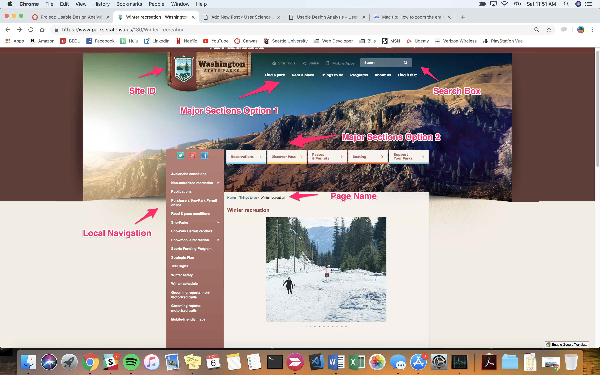
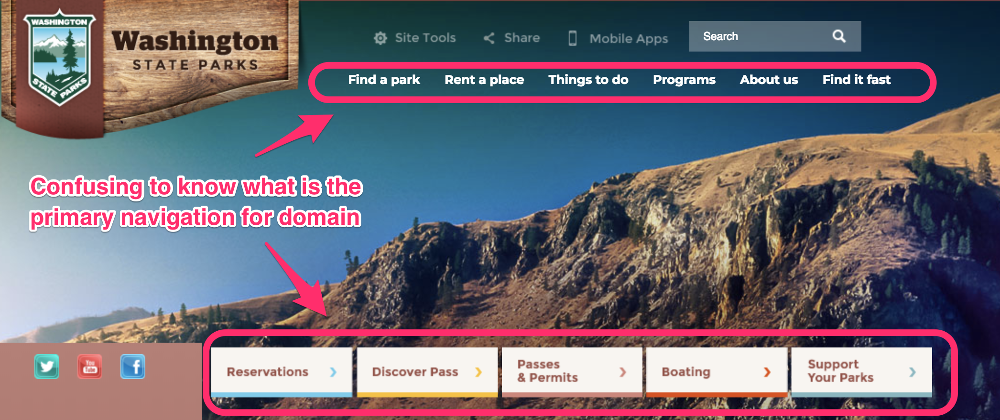

For my second post: I am working with the WA state park’s website and navigating deeper into learning more about all the winter recreation options available to residents.
WA State Parks Winter Recreation
Background
The WA state park’s website is used as an informational tool for all people interested in learning more about the state parks in Washington State. This is for a variety of recreational reasons such as boating, hiking, and winter activities.
Information needed is: hours open to the public, park locations, safety announcements, weather conditions, purchase for seasonal passes, restrictions, and budget plans for improvements.
Purpose of Website
- What is the Site ID?
- What page am I on? (What is the page name)
- What are the major sections of this site?
- What are my options for local navigation at this level?
- How can I search?
What criteria are you using to analyze this site?

My findings for the above criterion are summarized below:
- I can easily see that the Site ID is in the top left corner of the webpage labeled Washington State Parks. The Site ID is the name and purpose for the entire domain.
- I am on the winter recreation page that has basic information encouraging people to explore the state parks and understand the winter recreation options available. Information includes Sno-Parks that are cleared parking areas from snowfall, so visitors can safely park and explore. Additional information is Passes & permit information.
- The major sections of this site are divided into two horizontal navigation bars:
- Find a Park, Rent a place, Things to do, Programs, About Us, and Find it Fast
- Reservations, Discover Pass, Passes & Permits, Boating and Support your park
- The local navigation options at this level are:grooming reports:
- Avalanche conditions
- Non-motorized recreation
- Publications
- Purchase a Sno-Park Permit online
- Road & pass conditions
- Sno-Parks and Sno-Park Permit vendors
- Snowmobile recreation
- Sports Funding Program
- Strategic plan
- Trail signs, Non-motorized trails
- Winter safety
- Winter schedule
- Grooming reports: non-motorized trails, grooming reports: motorized trails, and mobile-friendly maps.
- I am able to search by using the search box at the top-mid right of the main heading on the webpage.
Analysis: What is Working and what is not working
I think the website is organized quite well, and the only criterion that I see room for improvement is: Criteria three: What are the major sections of this site?
The web designer for parks.state.wa can clearly identify which of the two navigation bars is the primary section for the entire domain, and then clearly indicate visually that the secondary navigation bar indicating that it's to support the local navigation options.
Recommendation

This would help eliminate the large amount of space between the two navigation menus and let the viewer see wha is the primary navigation inside the browser rather than having to zoom out or scroll both up and down to see the information contained on this page like I had to.